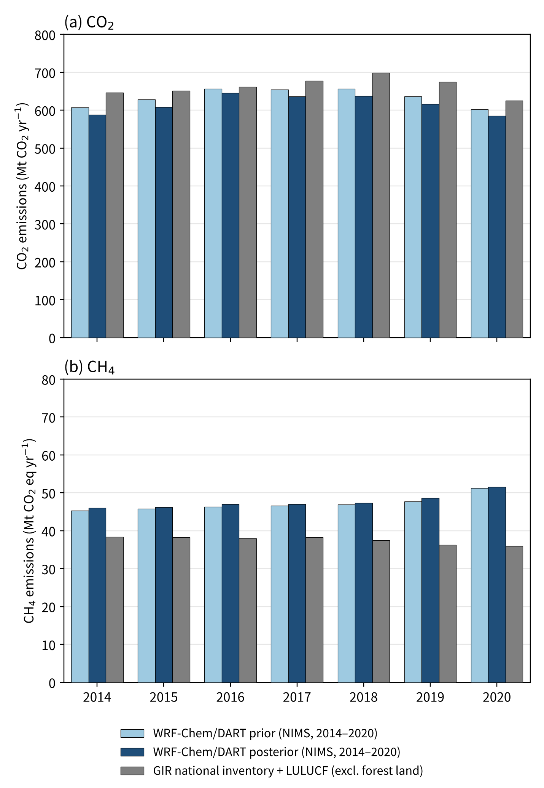
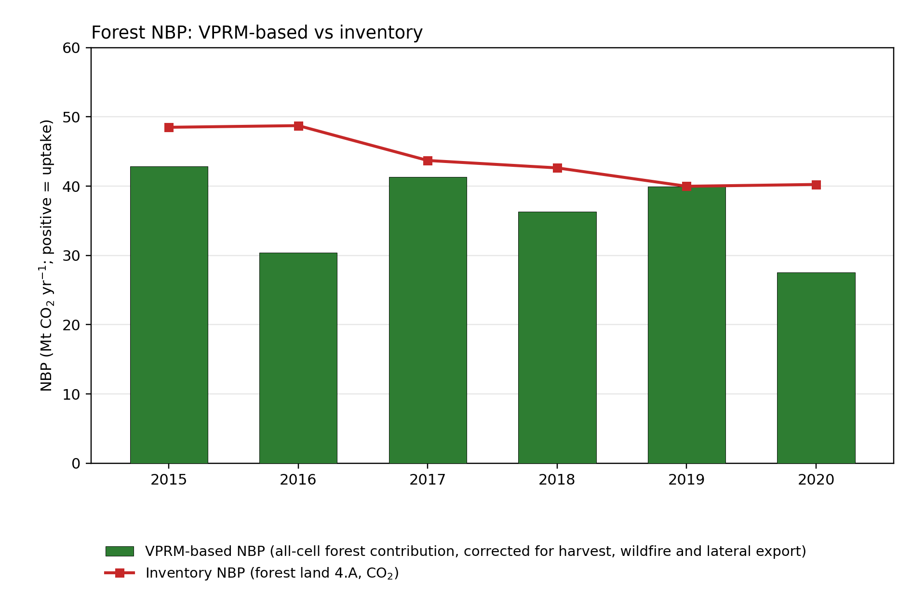
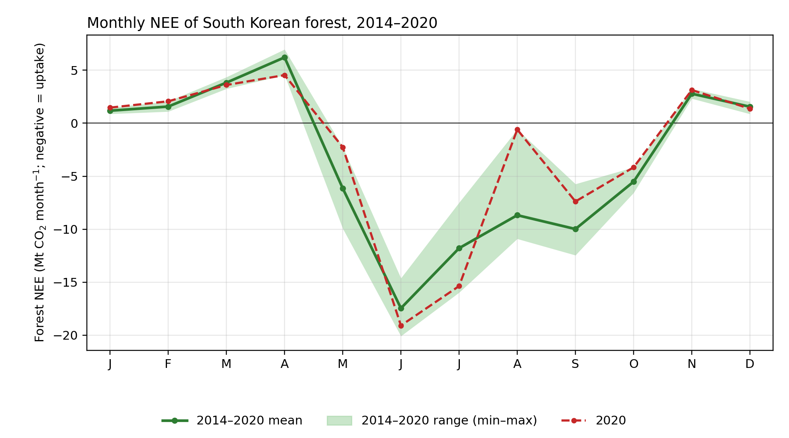
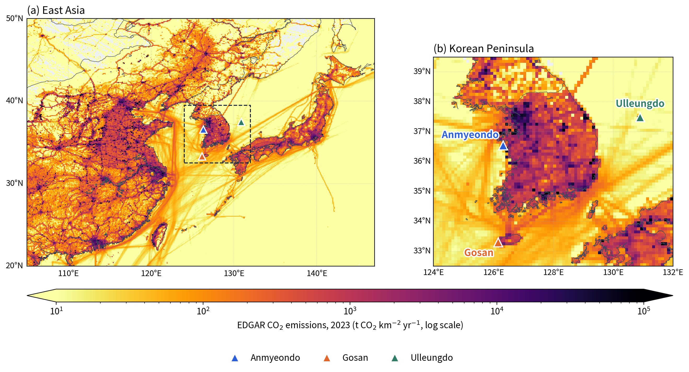
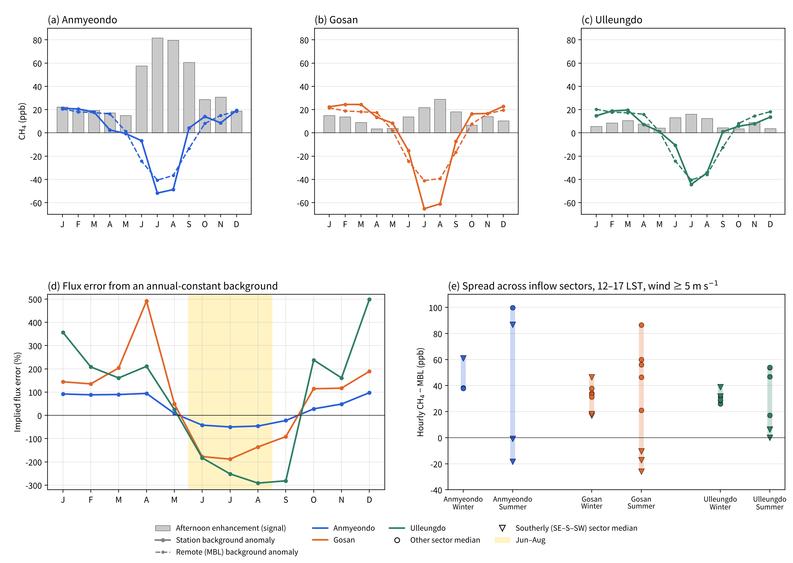

01 · 배출량 비교
역산 배출량과 국가 인벤토리
대기 관측 추정 배출량, 국가 인벤토리 대비
대기 관측으로 추정한 배출량은 국가 인벤토리에 비해 CO₂는 다소 작고, CH₄는 다소 큽니다. 온실가스종합정보센터(GIR)의 정밀 자료가 제공되면 더 정확한 추정이 가능합니다.
자세히 보기WRF-Chem/DART 대기 역산(국립기상과학원 운영 체계, 2014–2020년)으로 추정한 배출량과 산림 흡수량을 국가 온실가스 인벤토리와 비교했습니다. 관측소 배경농도를 어떻게 정하느냐가 배출량 추정에 얼마나 중요한지도 함께 정리했습니다.

대기 관측으로 추정한 배출량은 국가 인벤토리에 비해 CO₂는 다소 작고, CH₄는 다소 큽니다. 온실가스종합정보센터(GIR)의 정밀 자료가 제공되면 더 정확한 추정이 가능합니다.
자세히 보기
대기 역산으로 추정한 산림 흡수량은 국가 인벤토리(평균 약 44.6 Mt)와 규모가 비슷합니다. 다만 해마다 변동이 커서, 2020년에는 약 33 Mt으로 가장 작았습니다.
자세히 보기
산림은 5–10월에 CO₂를 흡수하고 겨울과 4월에는 호흡으로 내보냅니다. 2020년 8월은 흡수가 거의 0으로, 기록적으로 길었던 장마 시기와 겹칩니다.
자세히 보기
수도권과 서해안·남동부 산업지역에 CO₂ 배출이 집중되고, 서쪽에는 중국 동부의 대규모 배출원이 있습니다. 세 관측소는 서로 다른 방향에서 들어오는 공기를 관측합니다.
자세히 보기
배경농도를 연중 일정하다고 두면 여름에는 배출을 과소, 겨울·봄에는 과대 추정합니다. 공기가 들어오는 방향에 따라서도 배경이 수십 ppb 달라, 계절·풍향별 배경 설정이 필요합니다.
자세히 보기대기 관측으로 추정한 배출량은 국가 인벤토리에 비해 CO₂는 다소 작고, CH₄는 다소 큽니다.
대기 역산으로 추정한 산림 흡수량은 평균적으로 국가 인벤토리와 비슷하지만, 해마다 크게 달라집니다.
| 연도 | 대기 역산 | 국가 인벤토리 |
|---|---|---|
| 2014 | −45.6 | −47.9 |
| 2015 | −48.5 | −48.5 |
| 2016 | −36.3 | −48.8 |
| 2017 | −47.1 | −43.7 |
| 2018 | −41.7 | −42.7 |
| 2019 | −45.4 | −40.0 |
| 2020 | −32.7 | −40.3 |
표의 값은 그림에서 읽은 근삿값(Mt CO₂/yr)입니다.
산림은 5–10월에 CO₂를 흡수하고, 겨울과 봄(4월)에는 호흡으로 내보냅니다. 흡수는 6월에 가장 큽니다.
안면도·고산·울릉도 관측소는 동아시아와 한반도 배출원 사이에 자리해, 국내외 배출의 영향을 함께 받습니다.
배경농도를 연중 일정하다고 가정하면, 계절에 따라 배출량 추정이 수백 %까지 틀릴 수 있습니다.